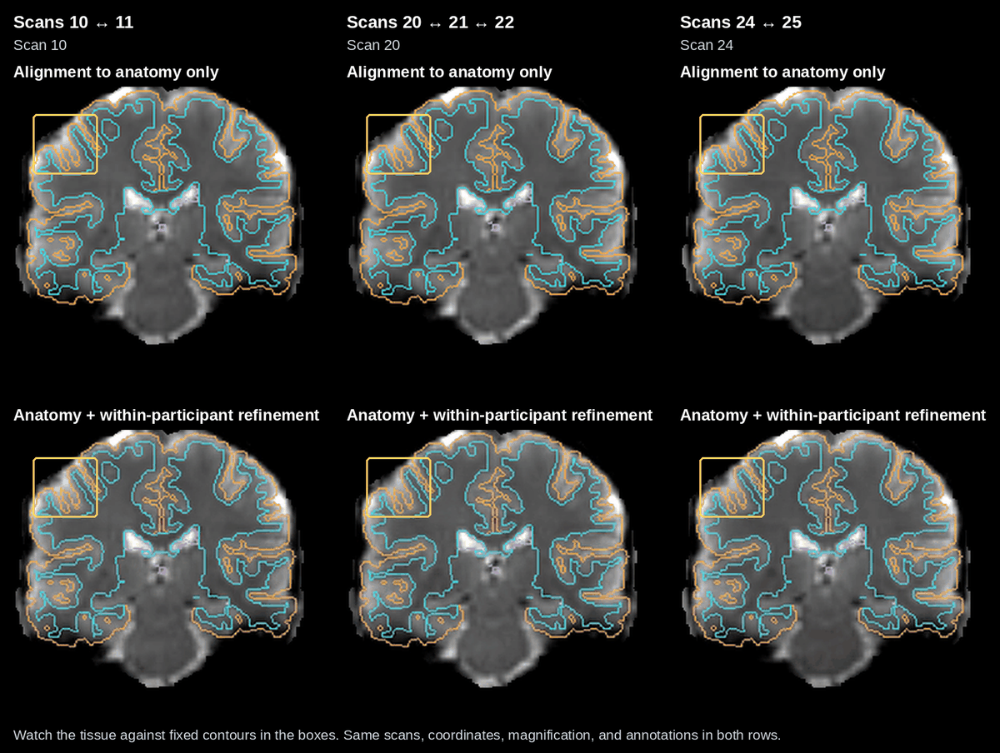
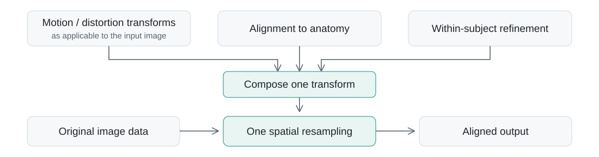
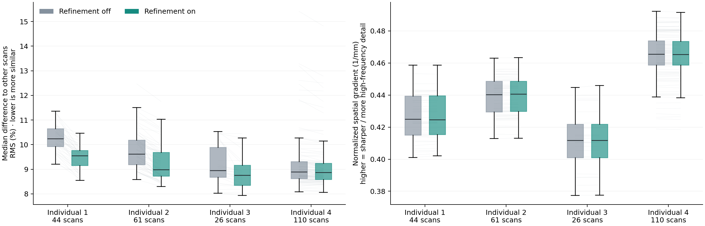

Within-subject longitudinal alignment
Both approaches already provide good alignment to the participant’s anatomy. The within-subject step is fine-tuning: it aims to dampen occasional small placement shifts across acquisitions or sessions while retaining anatomical alignment. The differences are often subtle, as the full sequence illustrates.
Careful alignment within the same person over time is a central design priority of pfm-mefmri, supporting longitudinal studies of networks, behavior, and within-person change. Individual 1 illustrates this with dozens of acquisitions.
Full within-subject alignment video
The top row shows alignment to anatomy only. The middle row shows alignment to anatomy + within-participant refinement: anatomy alignment is retained, with added consistency across the participant’s acquisitions. Fixed T1 anatomy is shown below. Scans play in acquisition order; scan numbers help navigate the sequence. Anatomical contours and slice coordinates remain fixed. Full-resolution video.
Why within-subject alignment matters: focused transitions

Watch tissue placement against the fixed contours in the boxes. These selected transitions make the placement shifts easier to see. Both rows use the same scans, coordinates, magnification, and annotations; the full sequence above provides context beyond these examples.
The selected transitions show concrete examples of the small placement blips this refinement is intended to reduce. They highlight visible benefits; they are not a quantitative estimate of the average improvement.
For clarity, these displays hide non-brain tissue using one fixed anatomical brain mask with a 3 mm margin, shared across scans and both methods. This is a display-only mask; registration and source images are unchanged.
Refinement without an extra spatial interpolation

The within-subject correction is composed with the existing alignment transform. The original image data are then spatially resampled once using the combined transform; refinement does not repeatedly interpolate already aligned images. Reference images used to estimate the transforms are separate from this final application. This avoids an additional spatial interpolation, rather than making resampling itself lossless.
Quantitative scan-reference stability

Left: each scan’s median RMS difference to the other scans from that individual; lower means more similar images. Right: normalized spatial gradient, a measure of spatial texture; higher means sharper intensity changes. Median paired changes in this sharpness measure range from −0.014% to +0.045% across these individuals, consistent with no appreciable change on this measure.
Boxes show the middle 50% of scans and their median; whiskers extend to observations within 1.5 times the interquartile range. Faint lines connect the same scan with refinement off and on. Identical anatomical masks and image grids are used in each comparison. Stability includes contrast and noise effects as well as alignment; sharpness also depends on noise and contrast and is not an estimate of effective resolution. These are descriptive checks on images used in refinement, and scans are not independent participants.
Sharpness measurement
For each reference image, compute the mean squared forward intensity difference along each spatial axis, divided by squared voxel spacing. Sum these three means, divide by intensity variance within the same mask, and take the square root (units: 1/mm). Adjacent voxel pairs must both lie within a fixed anatomical brain mask eroded by two voxels. The normalization makes this measure invariant to a global intensity scaling. A 1 mm Gaussian smoothing control reduced the measure in all four individuals. This is a spatial-frequency diagnostic, not FWHM or a direct measurement of retained biological information.